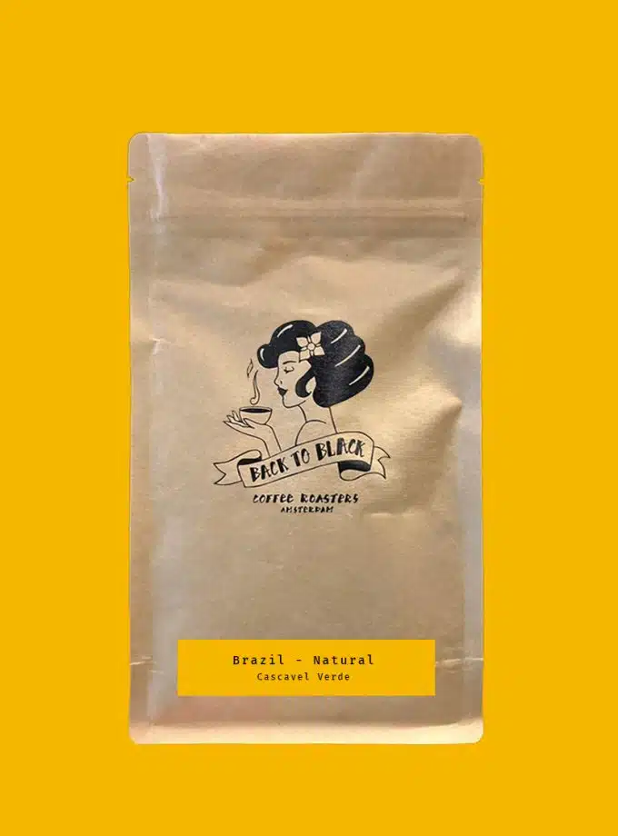
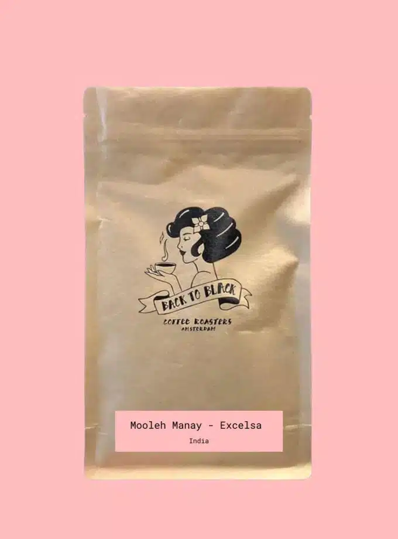

Colombia – Sugarcane Decaf – El Dragon
Smaak & herkomst
- Tonen: caramel, kers, melkchocolade, rum
- Koffieboer: Hugo Gonzales Diaz
- Variëteit: Caturro, Pink bourbon, Castilla, Colombia
- Regio: Huila
- Verwerking: Washed – AE decaffeinated (sugarcane)
- Bewerkingsstation: El Dragón
- Oogst: 2023
- Hoogte: 1700–2200 m.a.s.l.
- Mondgevoel: Medium body
Filter: start 4 dagen na roosteren
Espresso: start 10 dagen na roosteren
Het best om te zetten binnen zes weken.
€ 11,15 – € 43,55
Kies je opties
El Dragón is het resultaat van 22 kleine producenten uit de regio Buesaco. De gebruikte koffie is voornamelijk van de variëteiten Caturro, Pink bourbon, Castilla en Colombia, wat leidt tot een romig profiel met een uitgesproken fruitig en bloemig aroma.
De toegepaste decafeïneringsmethode is de Ethyl Acetate, vaak suikerriettechniek genoemd. Zo blijft het karakter van de koffie mooi intact, maar dan zonder cafeïne.
Wij zijn verliefd op deze cafeïnevrije koffie! Tonen: caramel, kers, melkchocolade, rum.
Er zijn nog geen beoordelingen.
Gerelateerde producten
-
 Brazil – Cascavel Verde – Pulped Natural
€ 8,95 – € 32,55
Bekijk product -
 India – Mooleh Manay – Excelsa
€ 19,20 - € 83,70
Bekijk product